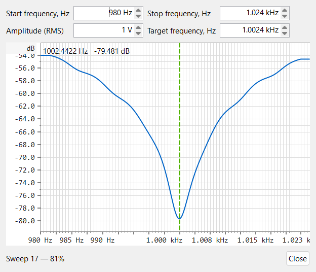

For how the measurement behind this display works — a played logarithmic sweep deconvolved against the reference to recover the notch's response in one pass — see Theory of operation ▸ Frequency response.

A passive notch filter (typically a twin-T) ahead of the input is the classic way to measure distortion below the analyser's own floor: it removes the fundamental before the ADC, so the FFT sees the harmonics without the converter's own distortion products. But the notch only works if its null sits exactly on the test frequency — and on a twin-T the centre and the depth move together as you turn the trimmers. The wizard gives you a live, continuously refreshing picture of the notch so you can watch the null move while you adjust the filter with a screwdriver in hand.
Open it from the main menu: Tools ▸ Tune notch…. While the dialog is open it takes over playback and capture — the generator, oscilloscope, FFT and any frequency-response sweep stop for the duration. Wire the signal path as for the later distortion measurement: output ▸ notch filter ▸ input.
| Control | Notes |
|---|---|
| Start frequency, Hz | Low edge of the displayed band. Accepts kHz shorthand — typing
1.5k means 1500 Hz; plain digits are read as
Hz. |
| Stop frequency, Hz | High edge of the displayed band, up to Nyquist. |
| Amplitude (RMS) | Drive level of the tuning sweep, in volts RMS; accepts µV / mV / V / dBV. |
| Target frequency, Hz | The frequency you are tuning the notch onto — drawn as a dashed vertical marker on the plot (see below). |
| Close | Stops the tuning loop, releases the audio device and restores the main frequency-response view. |
All four values are remembered between sessions. Editing the start / stop fields re-scales the frequency axis immediately.
What you see. The plot shows the measured (input) channel's response, rebuilt roughly ten times a second from a short looping sweep (about a quarter of a second per pass) — each turn of a trimmer shows up within a fraction of a second. The vertical axis fits itself to the trace automatically. Three live elements sit on the plot:
Tuning workflow. Set the target to your distortion-test
frequency and bracket it with the start / stop band. Turn the notch's
frequency trimmer until the readout's null frequency lands on the target
and the marker turns green, then adjust the balance / depth trimmer for
maximum depth; on a twin-T the two interact, so iterate a couple of
times. When the null sits on the target at full depth, close the wizard and
first measure the notch's own frequency response with a normal sweep,
saving it to a .frc file. Load that as a calibration in the
FFT pane so the notch's shape is de-embedded from the
reading, then run the distortion measurement there. The measurement behind
this display is the same played-sweep deconvolution as a normal
frequency-response run — see
Theory ▸ Frequency response.